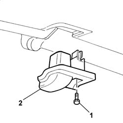
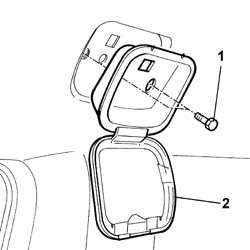
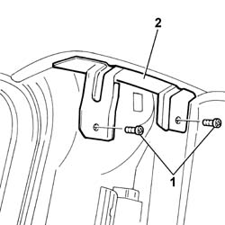
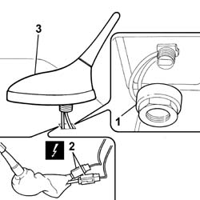

5570T61 MULTI-FUNCTION AERIAL - R R
- Path
- Procedures > 55 ELECTRICAL EQUIPMENT > 5570 ACCESSORIES > 5570T CAR RADIO AND CAR TELEPHONE > 5570T61 MULTI-FUNCTION AERIAL - R R
- Kind
- repair procedure (removal / refitting; the operation number is the code)
- Applies to
- all engines; all production periods
- Interactive page
- https://sloeber94.github.io/elrnDB-fUlss/en/#/179007616
Applies to: all engines; all production periods
 Removing
Removing
 Refitting
RefittingOp. 5530B56 BATTERY DRIP TRAY COVER - R.R.
- Disconnect the negative battery terminal.
Op. 7040H42 REAR PILLAR TRIM - R R
Op. 7065C30 INTERIOR L/H OR R/H GRAB HANDLE (ONE) - R+R
1. Undo the retaining bolts.
2. Remove the shields on the hinged opening windows.

Applies to: all engines; all production periods
1. Undo the retaining bolts.
2. Remove the fastenings.

Applies to: all engines; all production periods
1. Undo the retaining bolts.
2. Remove the brackets on the rear pillars.

Applies to: all engines; all production periods
- Release some of the velcro fastenings at the rear and lower the rear part of the roof lining taking care not to bend it and spoil it.
1. Undo the fixing nut.
2. Disconnect the electrical connections.
3. Remove the aerial complete with support.

Applies to: all engines; all production periods
Refitting
Removing- Place the aerial complete with support in position.
- Tighten the fixing nut.
- Connect the electrical connections.
- Attach the velcro roof fastenings.
- Position the roof lining mounting brackets on the centre pillars and tighten the fixing bolts.
- Position the fastenings on the roof lining and tighten the fixing bolts.
- Place the shields in position on the hinged opening windows and tighten the fixing bolts.
Op. 7065C30 INTERIOR L/H OR R/H GRAB HANDLE (ONE) - R+R
Op. 7040H42 REAR PILLAR TRIM - R R
- Connect the negative battery terminal.